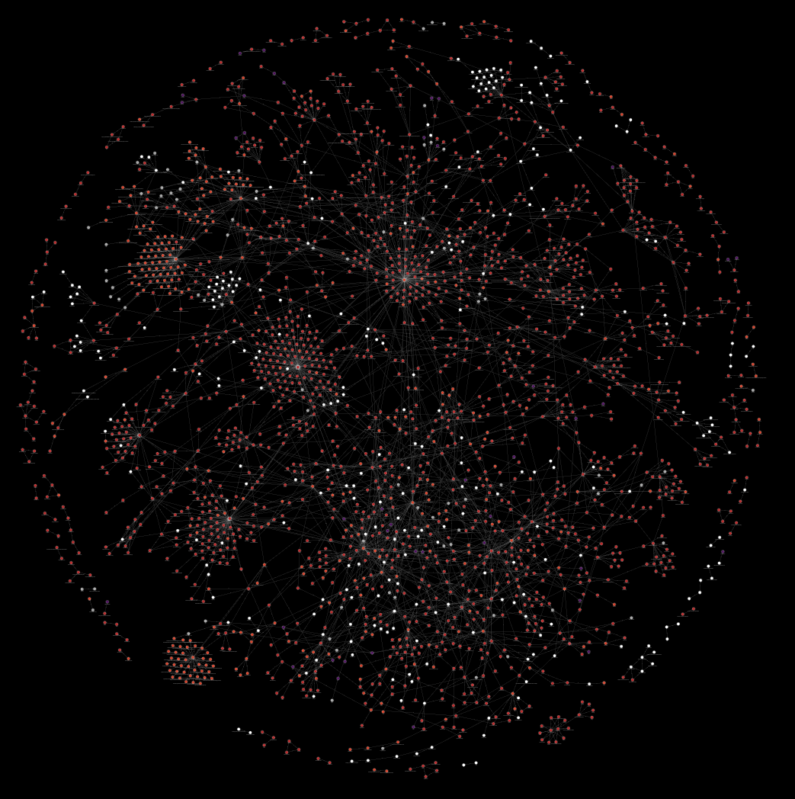
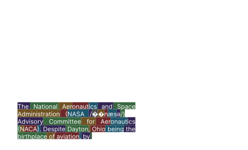

This project is currently under development. The material presented on this page does not reflect the full scope of the project and may omit important details. The content is intended as a high-level overview; complete technical details will be provided upon project completion.
This report details the research for the project titled “Teaching to Understand, Understanding to Teach: Retrieval-Augmented Generation for Requirements Traceability.” The research was initially conducted for the Jet Propulsion Laboratory (“JPL”), California Institute of Technology (“Caltech”), under the sponsorship of the National Aeronautics and Space Administration (“NASA”).
| Term | Definition |
|---|---|
| RAG | Retrieval-Augmented Generation; a technique enhancing LLMs with external data. |
| Embeddings | Vector representations of text segments used for semantic search. |
| Information Supply | The existing, ingested corpus of data used by the system. |
| Traceability | The ability to link requirements to their corresponding code implementation. |
| Artifact(s) | Pieces of information pertaining to the system information supply. |
| Requirement | A formally agreed-upon "shall" statement defining a system condition, capability, or constraint. |
| Test Case | Detailed, step-by-step series of instructions on an end product used to verify and validate a specific requisite or requirement. |
| Entity | A distinct object or thing acting individually. |
| Relationship | A link between two entities. |
| Branch Chunk | Fixed-size, overlapping subset of tokens from an artifact. |
| Leaf Chunk | Variable-size, non-overlapping semantic subset of tokens from a branch chunk. |
| Symbol | Description |
|---|---|
| \( N \) | Sample size of the set under consideration |
| \( A \) | Artifact |
| \( R \) | Requirement |
| \( T \) | Test Case |
| \( C_b \) | Branch chunk |
| \( C_l \) | Leaf chunk |
| \( E \) | Entity |
| \( Rel(E, E') \) | Relation |
The initial state of our tracing system, whether in the first or repeated usage of the tool, is the entry point. The goal of the system is to suggest traceability mappings from either an individual requirement (\(R\)) or test case (\(T\)) to trace sets of \(T\) or \(R\), respectively. Two types of input, traceable artifacts and contextual artifacts, govern the input space. In our work, artifacts are pieces of information that make up the data corpus upon which the system depends.

A traceable artifact is an information artifact that represents system intent or system verification and is eligible to participate as a source or target in a traceability relationship; in this system, requirements and test cases encode such features. Contextual artifacts are support artifacts, non-requirement and test artifacts, that provide auxiliary information to the information supply for context-retrieval support. Contextual artifacts are non-traceable units, contrary to traceable artifacts, whose purpose is to be in a source or target set.
System input consists of a single artifact, which may be a support, requirement, or test document. The system accepts only one artifact per input operation. If either a requirement or a test case is selected, the system operates under a bidirectional traceability model. A requirement may be related to and/or dependent on a set of test cases, a set which may be empty, singular, or contain multiple. Likewise, a test case may be related to and/or dependent on a set of requirements, a set which may be empty, singular, or contain multiple. Additionally, the system supports intra-traceable-artifact traceability, allowing requirements to be traced to other requirements \(( R \rightarrow \{ R\} )\) and test cases to be traced to other test cases \(( T \rightarrow \{ T\} )\), capturing inter-requirement and inter-test relationships that may exist within the same or different artifacts.
Once an artifact is ingested, the system will check if the artifact exists. If the artifact does not exist, we move the submission to the preprocessing stage. If the artifact already exists, we return a warning to the user and reprompt for a different submission. This is done to avoid duplicates from existing in the information supply.
All logic handling, i.e., information sending, receiving, processing, and displaying, will be executed through a custom Application Programming Interface (API). The API will govern the entire system workflow and manage the logic handling of all data pipelines, model interactions, data ingestions, benchmarking, and UI-related operations, allowing for modularity and ease of development.
Preprocessing is an essential step in data manipulation that comes before examining or working with that data. Recent analyses indicate that learning performance is driven less by dataset noisiness or size and more by the preservation of informative, unique tokens [1]. Building on this, token-level cleaning methods demonstrate that filtering out 30–40% of uninformative tokens, while retaining task-relevant data, can enhance tokenization quality and downstream performance, challenging assumptions that aggressive cleaning is inherently detrimental [2]. Rather than pretraining a model, our system is designed to achieve its objectives using fine-tuning and prompt engineering techniques. The system primarily relies on a knowledge graph constructed via entity–relation extraction, inspired by the LightRAG architecture [3]. The knowledge graph component is derived from processed text segments obtained during inferencing stages using unique prompt templates. Additional metadata, including fields like descriptions or related information, is derived alongside entity–relation extraction to enrich the knowledge graph and other relevant processes.
Large language models have a fixed-sized context window, which is the amount of text, in tokens, the model can receive as input. A common technique to handle large context inputs is to shorten the input into smaller segments, otherwise known as chunking. Chunking enables artifacts to be processed within the required context length by partitioning the text into smaller, fixed-sized segments of constant size, typically well below the maximum context window.
Although inputs with length just below the maximum context window could be provided as a single prompt, operating near this limit is not recommended as inference performance tends to degrade with increasing input size [4]. Chunking, in our case, will serve a greater purpose, other than fitting within allowable window sizes, in a technique we call Hierarchical Artifact Decomposition-Recomposition (HADR), which we will later introduce.
Entity-relation refers to the structured representation of real-world concepts as entities and the semantic links that connect them, relations, providing an explicit model of how information is related across artifacts. In contrast, entity-relation extraction is the process by which these entities and relationships are identified from unstructured natural language text, typically using LLMs to interpret meaning and context. Together, entity-relation structures enable the construction of knowledge graphs, where entities form nodes and relationships form edges, allowing information to be interconnected, queried, and reasoned over systematically [5].

This structure becomes particularly valuable for traceability, as it makes implicit dependencies between requirements, test cases, and supporting information explicit and navigable. While complex statements such as requirements do not explicitly specify their relationships to other requirement or test cases, nor the information necessary to support such conclusions, our proposed method supports this reasoning process by decomposing statements, before entity-relation extraction and retrieval, into support components that facilitate and strengthen the implicit relation inference reasoning steps [6]. When integrated into retrieval-augmented generation systems (RAG), entity-relation representations move retrieval beyond isolated text similarity, enabling context-aware retrieval and reasoning over linked information across multiple artifacts [7].

Our method explicitly decouples entity extraction from relation inference, allowing the language model to identify entities in isolation before inferring relationships among the extracted entities within the same textual context. This separation ensures that entity identification is not confounded by relational reasoning and that relation inference is performed solely over a fixed and well-defined set of entities, mitigating performance degradations and enabling multi-step extractions [8]. Within this framework, a structured preprocessing strategy supports accurate and scalable entity-relation extraction in RAG systems. The resulting entities and relationships are subsequently integrated into a structured knowledge graph that supports downstream traceability and retrieval tasks.
Chunking is a simple, yet effective operation in principle; however, finding the appropriate chunking parameters to model your data is a considerably more challenging task. A commonly adopted approach is selecting a fixed-size window \(K\) to segment text (e.g., 512 tokens or characters). While this method performs well in practice, there are instances where it can lead to performance issues by severing contextual dependencies across chunk boundaries. As a result, consecutive chunks may lack critical information present in preceding segments, a limitation often mitigated by overlapping chunks; this introduces an additional overlap parameter \(P\). Finding a suitable set of parameters \(K\) and \(P\) can prove challenging in larger, heterogeneous data settings, not to mention expensive if \(K\) and \(P\) are token-based.

Recent evaluations demonstrate that adaptive chunking strategies significantly outperform these fixed-sized methods in complex and critical decision-making scenarios, particularly in RAG- and LLM-based applications, by dynamically preserving contextual integrity, a strategy we adopt using prompt engineering techniques [9]. To jointly achieve information preservation and effective chunking, we adopt a conventional chunking strategy by introducing two successive operations: branch and leaf chunking.
Branch chunking creates fixed-size, overlapping partitions (size \(K\) and overlap \(P\)) of an artifact, while leaf chunking further subdivides each branch by using an LLM to produce semantically coherent, variable-sized chunks. This hierarchical approach ensures consistent, high-quality segmentation across artifacts of varying lengths. Consequently, we decompose each artifact into a depth-two tree (root \(\rightarrow\) branches \(\rightarrow\) leaves) with a jagged structure, allowing flexible, information-preserving processing and downstream summarization in the recomposition process.

Hierarchical Artifact Decomposition-Recomposition (HADR) is a preprocessing method we introduce to enable effective chunking of artifacts of arbitrary size, both large and small, while preserving contextual dependencies. The decomposition process decomposes an artifact into a hierarchical tree of chunks and subsequently recomposes the information by appending summaries at multiple levels. Formally, an artifact \(A\) is first decomposed into a set of branch chunks \(B\), defined as overlapping, order-preserving segments of fixed token size \(K\) with overlap \(P\), whose union collectively covers \(A\). Subsequently, each branch chunk \(B_i\) is partitioned into a family of variable-sized non-overlapping leaf chunks, whose union exactly reconstructs \(B_i\). Branch chunks are fixed-parameter decomposed, while leaf chunks are LLM-inference decomposed. The artifact hierarchy is a depth-two tree, with the artifact as the root, branch chunks at level one, and leaf chunks as the terminal level.

The recomposition process summarizes the leaf chunks within each branch subtree into a concise branch-level summary. These branch-level summaries are then aggregated to produce a final root-level summary of the artifact. HADR is notably information-preserving, i.e., no content of an artifact is lost during either process as we make the assumption all information about an artifact serves an importance. Our design enables downstream stages to selectively use both chunk and summarized representations as needed.

Given an artifact \( A \), first tokenize it using the tokenizer associated with the target LLM. The artifact is then decomposed (segmented) into an ordered sequence of branch chunks \(\{C_{b_1}, C_{b_2}, \dots, C_{b_N}\}\), parameterized by a fixed token window size \( K \) and an overlap \( P \). The following points are important to note:

For each branch chunk \( C_{b_i} \), a leaf-partitioning step is applied to produce a set of leaf chunks \( \{ C_{l_1}, C_{l_2}, \dots, C_{l_M} \} \). These leaf chunks are non-overlapping and contain no duplicates. Formally, they form an exact partition of the branch chunk, such that \( \bigcup_{j=1}^{M} C_{l_j} = C_{b_i} \). This procedure is applied independently to every branch chunk in the decomposed set.
Leaf partitioning is implemented via an LLM inference using a constrained prompt that segments each branch chunk into semantically coherent subsegments of variable length. Each leaf chunk is required to remain within the token budget \( K \), which is naturally satisfied given that it is derived from a branch chunk. While individual leaf chunks may vary in size, they collectively reconstruct the full branch chunk \( C_{b_i} \) exactly, with the total token count of their union equal to \( \lvert C_{b_i} \rvert \) (or fewer when the branch chunk is the last of the decomposed set or \( A \) itself).
A recomposition function takes a set of text chunks and produces a single summarized output. The function is implemented via LLM inference using a summarization prompt that combines information from all inputs into a coherent summary. Given a set of chunks at some level of the hierarchy, recomposition produces a summary corresponding to the level immediately above (i.e., leaf chunks are recomposed into a branch-level summary, and branch chunks into an artifact-level summary).
The function is first applied to each branch subtree at the terminal (leaf) level, producing intermediate summaries for their parent branch chunks. To accommodate large artifacts and bounded context windows, recomposition is then applied again over the set of branch-level summaries, yielding a single summary for the full artifact. This recursive aggregation constitutes the recomposition process.
During preprocessing, an artifact \( A \) is decomposed into a depth-two tree consisting of a root, branch nodes, and leaf nodes. The entity extraction function operates at the leaf level and takes as input a leaf chunk, its corresponding branch-level summary, and the global artifact-level summary. It produces structured, parseable, entity representations.
The function is implemented via LLM inference using a constrained entity-extraction prompt and is applied exclusively at the terminal (leaf) layer. Entity extraction is performed independently for each leaf node. For each branch chunk, the function is applied to every leaf in its subtree using that branch’s summary and the shared artifact summary (of which there is exactly one). Entity extraction is applied to all existing leaf nodes.
Once entities have been independently extracted from all leaf nodes, relationships are inferred at the branch level. Each leaf node produces its own entity set; for a given branch chunk, the entity set used for relationship extraction is formed by taking the union of all entity sets across the leaf nodes in that branch’s subtree. For each branch chunk, a relationship-extraction function is then applied using this unified entity set, the raw branch chunk text (not its summary), and the global artifact-level summary. This process produces relationships grounded in the local branch context while remaining informed by the global artifact context.
Relationship extraction is performed independently for each branch chunk. No cross-branch relationships are inferred at this stage; each branch is processed solely using its own entities and context. This ensures localized relational consistency prior to any downstream aggregation.
To capture relationships that may have been missed during initial extraction, we introduce a semantic relationship extraction step. This process is governed by a state bit, initialized to 0 at the start of the system. If no documents have been processed, or if only a single document is present, the state bit is set to 1 before proceeding. The semantic relationship function then operates on the appropriate set of artifact trees: either a single tree or multiple trees, depending on the state bit.
For each branch chunk, we compute its embedding and perform a cosine similarity search against a branch vector table to identify the top-\(N\) most semantically similar branches. This search can be restricted to a single artifact tree or span all trees, based on the state bit. Relations are then extracted between these branches using four sources of information: (1) the union of all entity sets from the selected branch chunks, (2) the union of previously extracted relations for those chunks, (3) the raw branch chunk texts (rather than summaries), and (4) the global artifact summary of the branch chunk under consideration.
While this computation can be resource-intensive, the token count per operation is \( N \cdot K + \lambda \), where \( N \) is the number of similar branches considered, and \( \lambda \) accounts for tokens from prompts, summaries, entities, and relations. This process is applied to all branch chunks. Since similarity computations are independent, the operation is highly parallelizable, producing a "global" set of relations. These are then merged with the master set of relations accumulated during ingestion, and finally, entities and relations are combined to construct the knowledge graph.